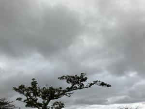
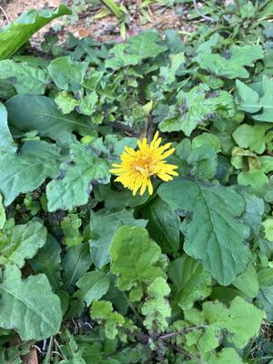

うるがいの話 ある日
最新: アタフタしました【うるがいの話 ある日】とは 一日だけのプログです
『うるがいの話』の最新一日だけのプログで、通信料が少なく経済的だ。カニの画像をクリックすると全ての日付が載る『うるがいの話』サイトを表示します
|
|
【うるがいの話】 うるがい(ｳﾙｶﾞｲ urugai)とは、『もずくがに』の名前でとても大きくなります。 |
|---|---|
|
|
【カミマヤーの話】 猫のことを方言でマヤーといいます。カミマヤー（kamimayaa）とは、神の猫のことです。 |
|
【たながぁの音楽】 たながぁ（ﾀﾅｶﾞｰ tanagaa）とは手長えびのことで、何種類かあり大きいのは車 エビぐらいになります。 |

|
【ぶながぁの話】 ぶながぁ(ﾌﾞﾅｶﾞｰ bunagaa)とは、赤い髪の毛、赤い身体、そして身長は１ｍ２０ｃｍ ぐらい、川の蟹を食べているの目撃された。場所は沖縄県国頭郡大宜味村のと ある村僕の隣近所に住んでいる爺さんから、聞いた話です。 |
|
|
【ギーマの話】 ギーマ(giima)とは、山原の里山に咲くスズランに似た、 花を付けます。実は食べられます、 気が付くと口の周りが紫になっています。 |
2026年02月18日 (水）アタフタしました
15:19
 
今後も納付書が届いたら税金を払うつもりでいるあなたに気に留
めてほしいトピックがあります。
じつは、国税庁では効率化とコスト抑制などの観点により令和６
（２０２４）年５月以降に送付する分から、送付の対象者を見直
し、納付書の事前の送付を取りやめることとしています。
取りやめ後にアタフタしないように、この記事で確認しましょう。
確定申告処理を先週の金曜日に済ませるも、申請を受領した旨の
メールが来ません。不安になり、マイポータルで申請の状況を確
認すると受理されていました。メールが来ないのは何故何でしょ
う、マ、いいか。ところで、納税の納付書は国税局から送られて
くるのでしょうか不安になり、ＡＩなど調べました。どうやら来
ない！。アタフタ・・・・・・、口座から引き落とされる『振替
納税受付』処理を行いました。ＡＴＭや、銀行（納付書が必要！
）でもできるが面倒くさいので止める。あ、これってヨメのマン
ション売買の所得税の話です。取り敢えず、今できることはした
が、アー、わかりにくい。
令和7年分（2025年分の確定申告）
振替日：令和8年（2026年）4月23日（木）
※毎年、納期限（3月15日前後）より約1か月後に引き落とされる
のが一般的です。
これ、Copilotへの引き落としの日を訪ねた回答。